1. Make sure you're eating healthy
Ask almost any personal trainer and they’ll tell you that regardless of your training goals, healthy eating is the backbone. Food is what fuels your body to reach your goals, and without proper nutrition through quality foods, you’re likely to stall. Maintain a balanced diet consisting of fruits, vegetables, complex carbohydrates, complete proteins, and healthy fats like fish oils and flaxseeds.
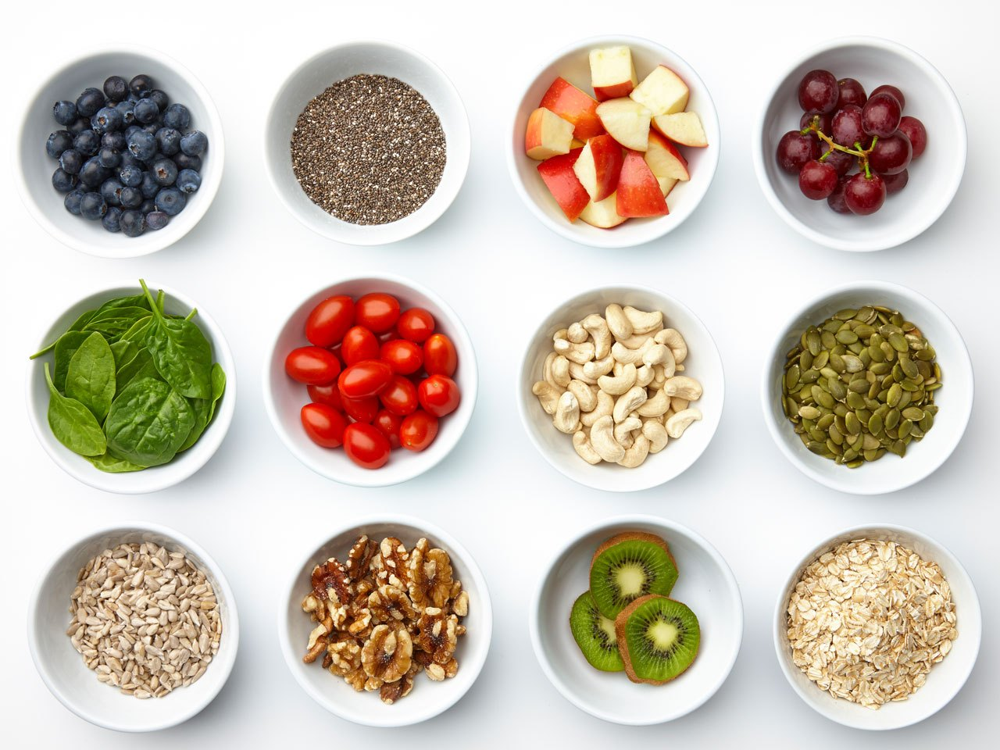2. Prepare ahead
Preparing meals in advance gives you the best chance to accomplish your nutrition goals, says Micah LaCerte, a personal trainer and fitness competition world champion. That way, he says, you won’t feel pressured to eat unhealthy foods or skip meals.
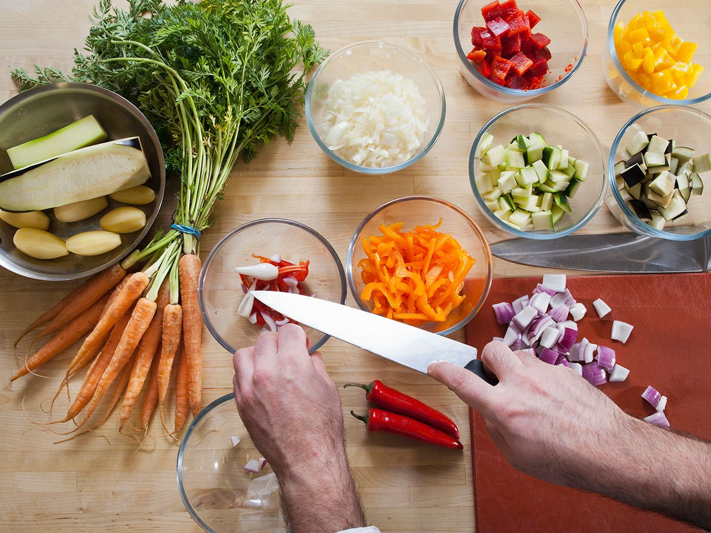3. Eat more clean food
Eating only three daily meals? Not a great idea. “Half the people I deal with aren’t losing weight because they don’t eat enough,” says veteran personal trainer Mike Duffy. ...Duffy advises his clients “to eat five times a day, about every three hours, to stimulate their metabolism” including two mini-meals between three basic meals. With activity levels decreasing throughout the day, he advises to “eat less as the day goes on.”
4. Control your portion sizes
You’ll be eating more often, so paying attention to portions is extremely important. “Make sure chicken breasts, (and) meats, are no larger than your palm, and that pastas are no larger than your fists,” says Jay Cardiello, a personal trainer to countless celebrities and professional athletes. He also suggests using “smaller bowls, plates, and cups” because studies show people “serve themselves 20-40% more food when they’re using larger plates.”
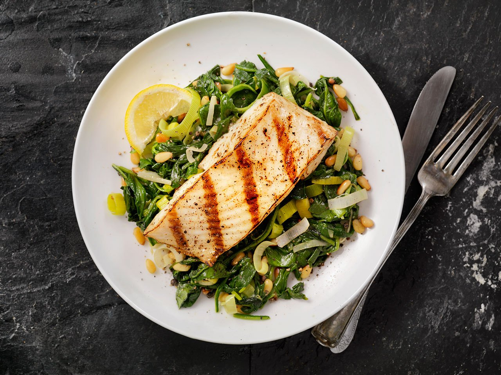5. Eat with purpose
Everything you consume should have substantial nutritional value. “You want the most nutritional bang for your buck,” says Dan Trink, C.S.C.S., a strength coach and trainer. “Everything you eat should serve some sort of nutritional purpose in your body, fuel your workouts, and (be) geared toward optimizing your body.”
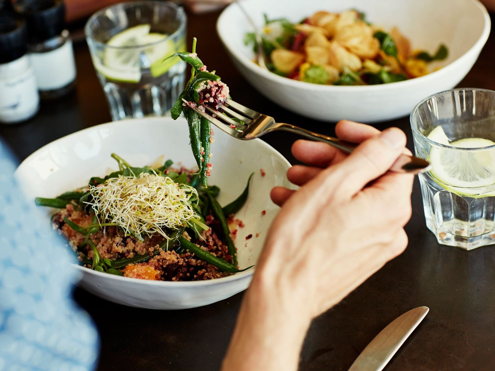6. Understand the basics of building muscle
Talk to any personal trainer and they’ll tell you there are certain muscle-building basics. First, increase your caloric and complete protein intake, so your body has enough building blocks to get bigger. Then, when you enter the gym, focus on your form. Perform compound movements and train with weights on average around four times a week. Never underestimate the importance of rest. Remember, muscle tissue grows outside of the gym when you’re giving your body time to relax and recover following your workouts.
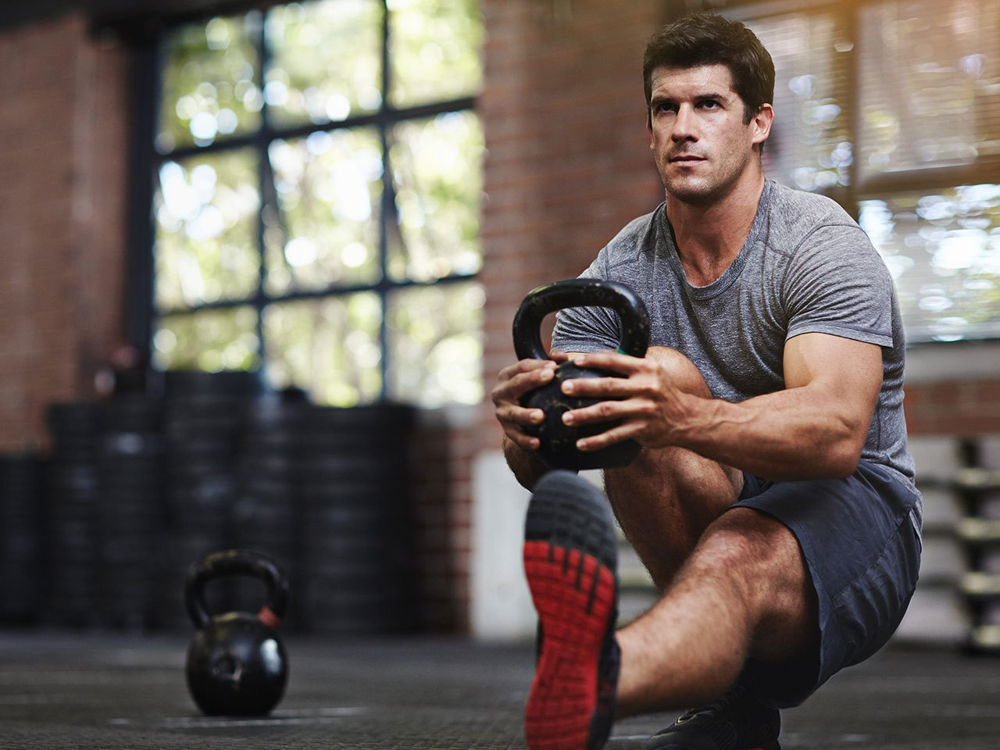7. Work your full range of motion
Don’t take any shortcuts. “Aim for the largest range of motion you can achieve in your exercises,” says Lee Boyce, C.P.T. “Your muscles will do more work per rep, and it will result in your breaking down more tissue by the end of the workout.”

8. Don't go too heavy
Wondering how to get the most out of lifting weights? “Use a weight that will have you failing on the set between the 30- and 40-second mark,” Duffy says. Time under tension causes muscle to grow. “If you’re failing at 20 seconds, you know that weight was too heavy.”
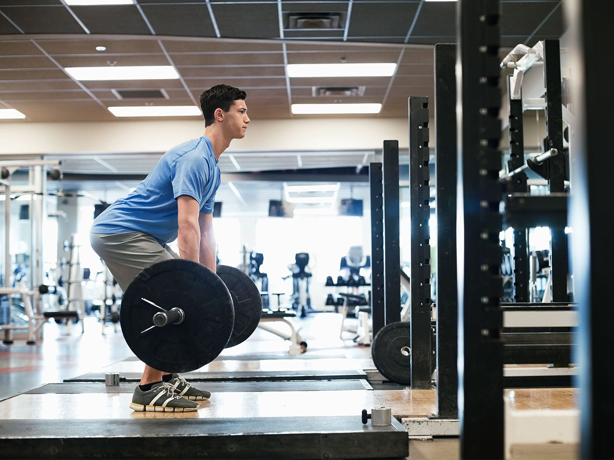9. Carefully consider cardio
If getting huge is your goal, then throttle back on your cardio workouts, says LaCerte—chances are, you’ll be burning far too many calories. So what should you do if you still want to get in some cardio? LaCerte says “a light jog a few days per week for 20 minutes is adequate.” If you’re aiming to burn fat, of course, then focus on getting enough protein every day (usually one gram of protein per pound of ideal body weight), while still keeping your overall caloric intake low.
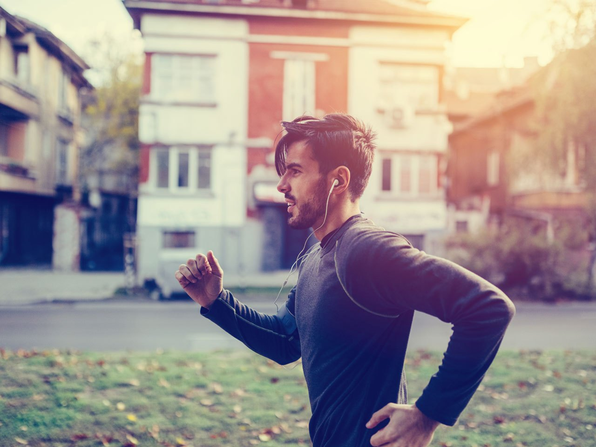10. Choose supplements intelligently
Some trainers and lifters feel supplements can play a key role in boosting muscle gains. If you subscribe to that theory, then chances are, you’re already taking protein supplements—but what else? Creatine, for one, “seems to be about the most effective strength- and size-building supplement,” Trink says. To boost your performance, you may also want to try peppermint. Cardiello explains that the scent “alters the perception of how hard you’re working out,” making it seem “less strenuous, slower-paced, and easier to complete.”
11. Prepare yourself for endurance training
When it comes to training for endurance, you’ll need to be hydrated and be sure you’re eating properly because, by its very nature, this form of training is very demanding on your body. You should be doing a good mix of cardio and weight training. And, to increase your aerobic capacity, you should incorporate high-intensity interval training, or HIIT. You’ll likely be sweating buckets and burning calories galore, so be prepared.
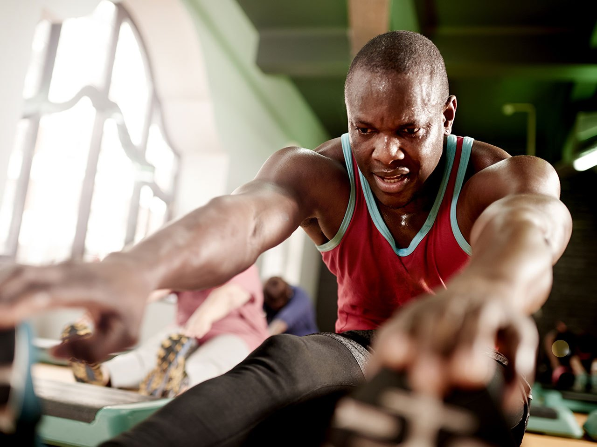12. Heart rate monitor
If you already own a heart rate monitor or fitness tracker, then this is a good time to start using it. If not, you may want to either go out and buy one, or learn how to do it yourself. “Don’t just exercise for a set amount of time and call it quits,” Duffy says. “You need to bring the intensity with it, and a fitness tracker can help you get a sense of exactly how hard your heart is working.”

13. Exhaust for endurance
To further your endurance training, you need to put in total effort. “You’re going for muscle exhaustion, so remember to fully exhaust the muscles,” Boyce says. How can you do that? Boyce suggests that you “get good at the bodyweight staples—pullups, chinups, pushups, inverted rows, (and) squats. If you can master these movements for high reps, your muscles will get well-conditioned.”
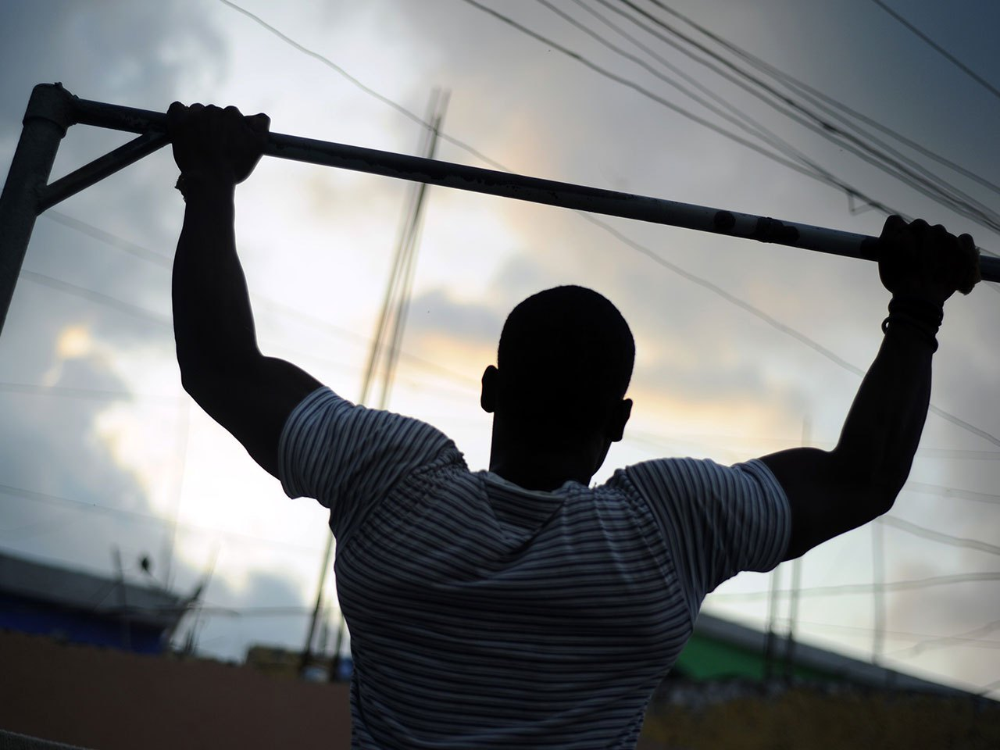14. Consider reducing rest time
It’s always tempting to take a break when training, but LaCerte advises that you should “stick with rest times of 30 to 45 seconds between sets, because this will help increase your overall endurance. If you are strength training, lift moderate to heavy weight and keep your rep range between 8–15 reps. If you’re running, mix low-intensity, steady-state cardio with sprinting.”
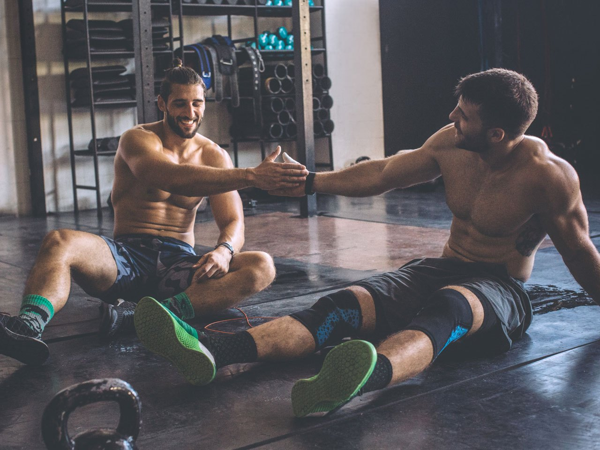15. Learn how to fight fatigue
Fatigue may be your biggest enemy when endurance training, but there are some ways to combat it. First, drink beet juice, which is packed with healthy nitrates that can improve your cardiovascular functioning. “Beets can actually increase stamina by up to 16%, and it helps your muscles produce more energy, more efficiently, making exercise less exhausting,” Boyce says. Another way to boost your performance is by carefully selecting your music. “When people listen to favorable music their blood vessels expanded 26%,” according to a study, Boyce says.
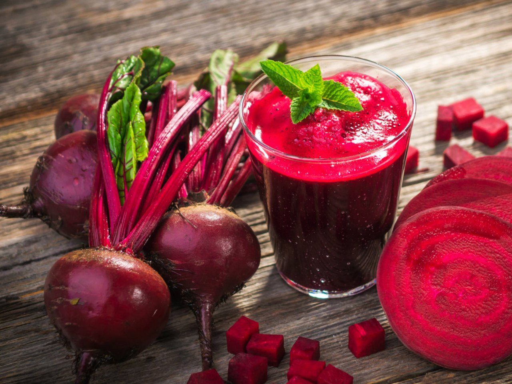16. Understand strength-training basics
If you want to build strength, you have to set goals and be patient. As you’re starting off, it’s important to be consistent and stick with your plan. When you’re in the gym, don’t get distracted. Stay focused on the task at hand. When you leave the gym, make sure you get proper rest and keep track of your progress. If you stay determined, your goals can be accomplished.
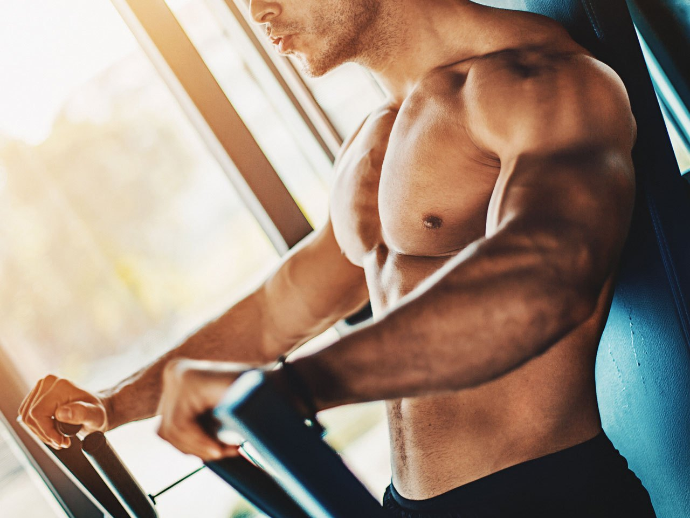17. Find your motivation
Motivation is the key. Some good ways to stay motivated while you’re working out: Count down, not up, when performing reps. Another trick: “Look at your dominant hand while you’re pushing up,” Cardiello explains—it “automatically includes a positive reinforcement” because the dominant hand more easily and quickly moves the weight.
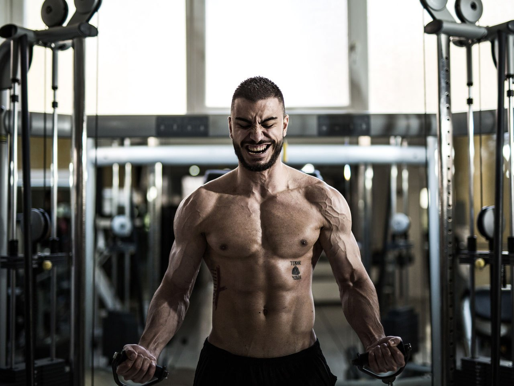18. Carefully focus on form
When strength training, you’ll be putting your body through very strenuous activity, so it’s important to maintain proper form. By maintaining proper form, “you’re guaranteed to activate the muscle groups that you are looking to train and, most important, you’ll stay healthy and injury-free,” Trink says. “The guy who can stay healthiest can train the most, and, in the long run, make the most progress.”
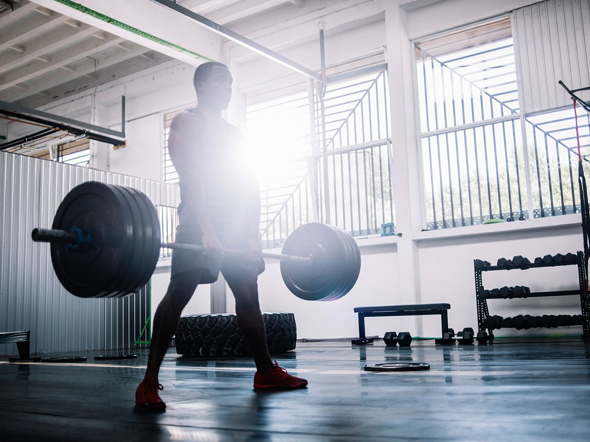19. Be mindful of the little things
Ever notice how a bunch of seemingly insignificant things can make all the difference? Strength training is no different. When you’re strength training, you have to “pay attention to the little things, because you’re only as strong as your weakest link,” Boyce says. “If you notice a deficiency, address it in conjunction with your program.”
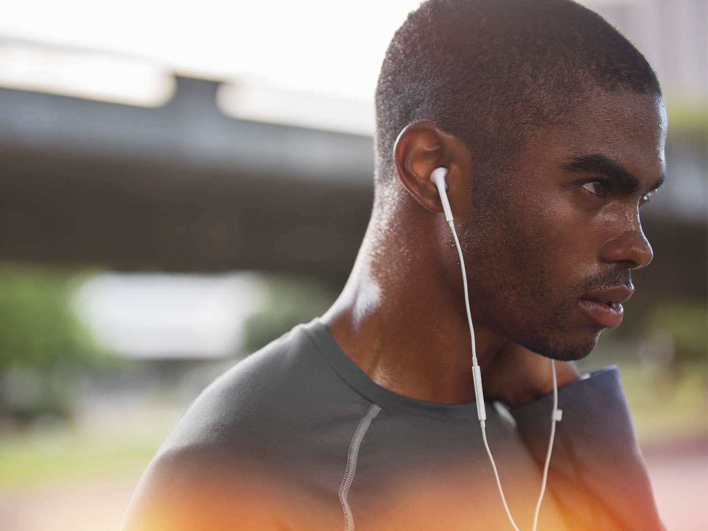20. Change helps
If you want to make progress, sometimes you have to change things up. “Ensure your body never gets adapted to what’s coming next,” LaCerte explains. Once that happens, you may notice diminishing strength gain results. To avoid this possibility, “switch up how heavy you’re lifting, your tempo of an exercise, your rep/set count, or what time of the day you’re lifting,” he says.
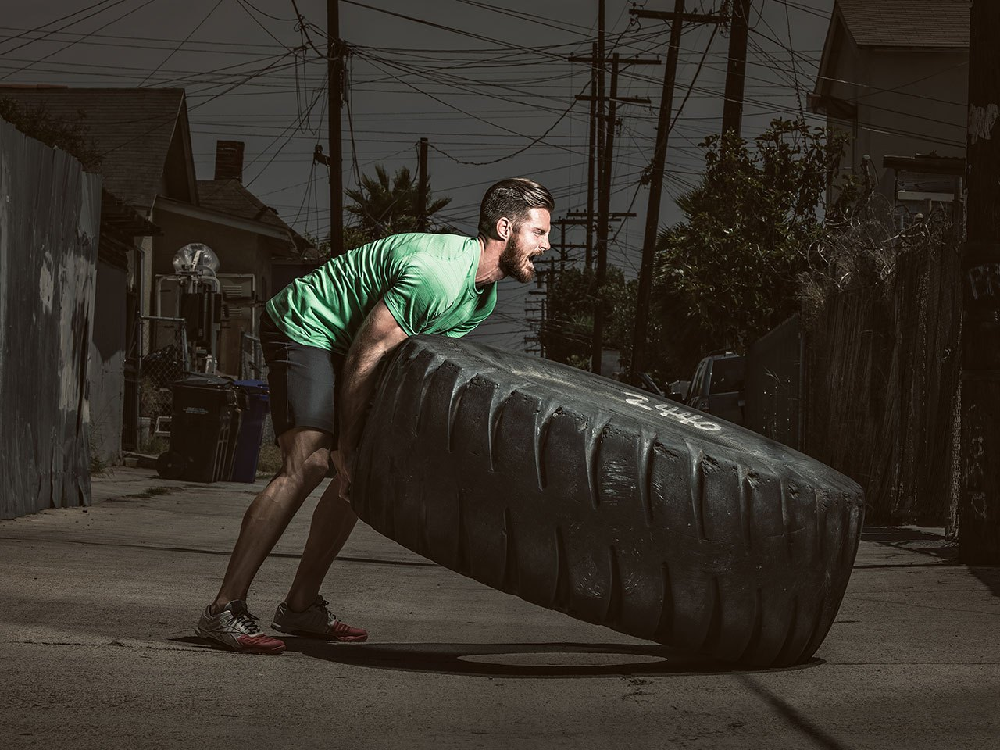21. Understand the basics of fat loss
Forget calorie counting, and start thinking of food as fuel for your body. Getting six-pack abs is usually a function of fat loss, not a lack of muscle definition—and burning fat all boils down to a simple equation: Calories in versus calories burned. That means going beyond calories and studying your macronutrient intake—fats, protein, and carbs—to understand how much you consume relative to how much you burn during a workout.
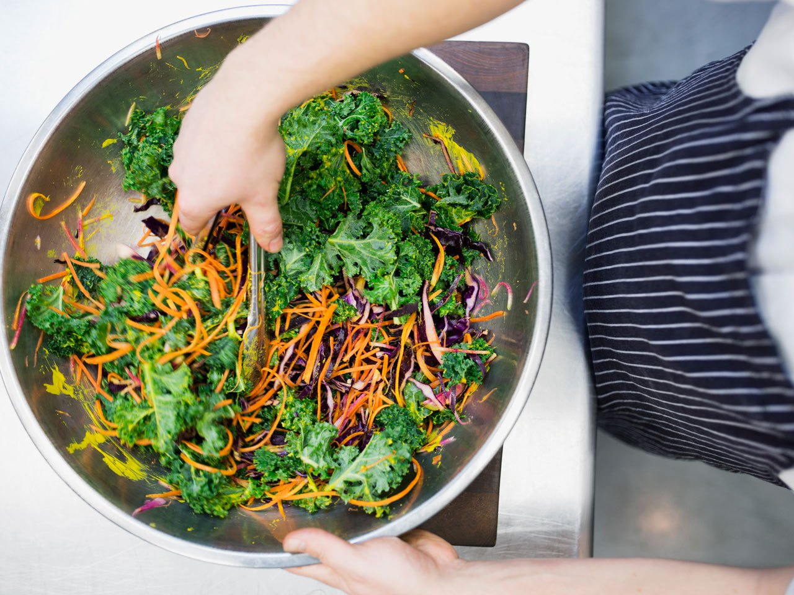22. Take photographic evidence
Can’t get the scale to budge? It’s possible you’re gaining muscle and shedding body fat—and that means your net weight change will seem “stuck,” even though you’re making progress. “Take pictures on a weekly basis—front, back, (and) side pictures all from the same angle, same lighting, same clothing.” That way, you’ll see change over time, even though it may not look like it day to day.
23. Understand how to use carbs
Say it with us: Carbs are not the enemy. Unless you’re on an extreme nutrition plan like the keto diet, carbs are an essential source of your body’s energy. That said, you need to be mindful about how you consume those carbs, because eating too many carbs—or eating carbs at the wrong times—can cause your body to store the excess energy as fat. Here’s how to eat carbs for more muscle and less fat.
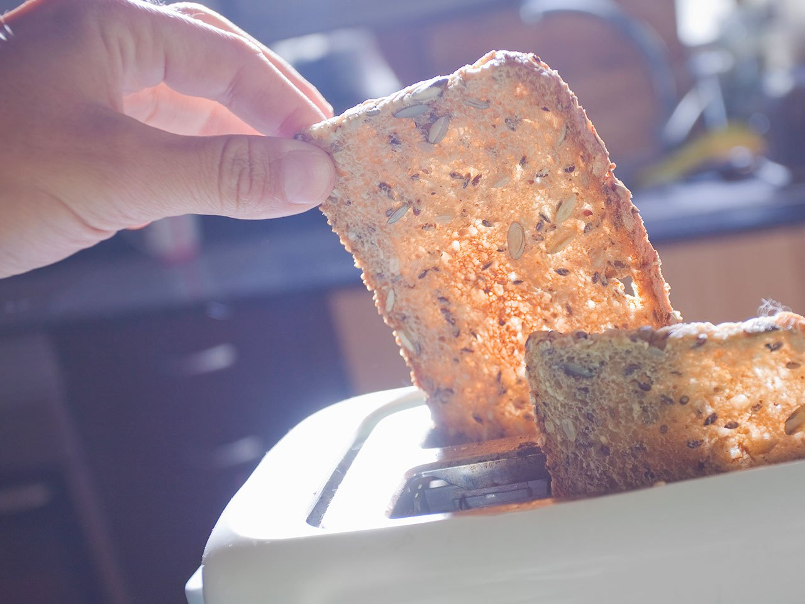24. Attack your lower body to burn fat
To flatten your belly, “go below your navel,” Cardiello says. “In a Syracuse University study, people burned more calories the day after they did a lower-body resistance training exercise than after they worked their upper bodies, simply because legs have more mass.” Here’s our roster of lower-body workouts on Men’s Fitness.
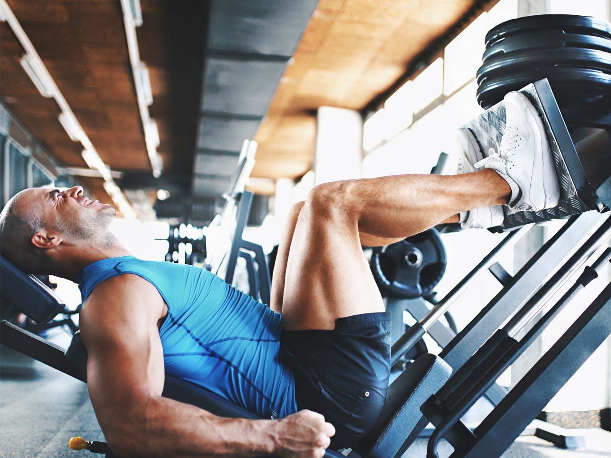25. Hydrate properly
An often-overlooked factor, and one stressed by Trink, is to make “sure that your GI tract is healthy, because that’s how you absorb all your nutrients.” Do so by consuming vitamins, fiber, minerals, a probiotic, and water. Cardiello suggests you drink “ice cold water first thing in the morning” adding “you’ll naturally boost your metabolism by up to 24% for 90 minutes.” LaCerte recommends you “drink at least one gallon of water per day.”
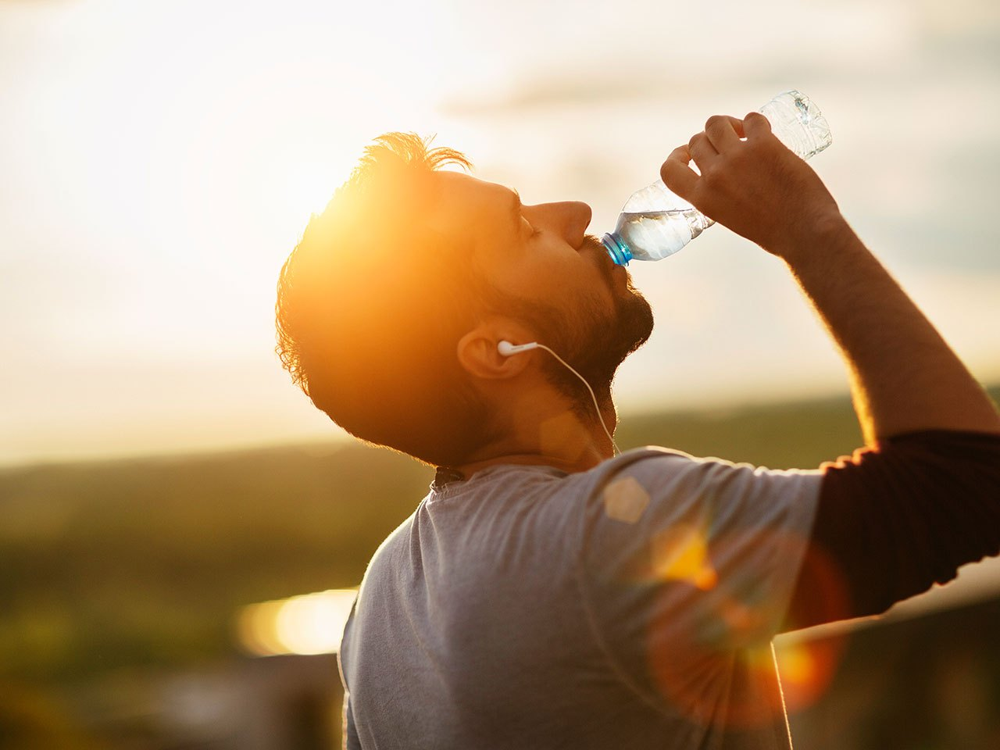